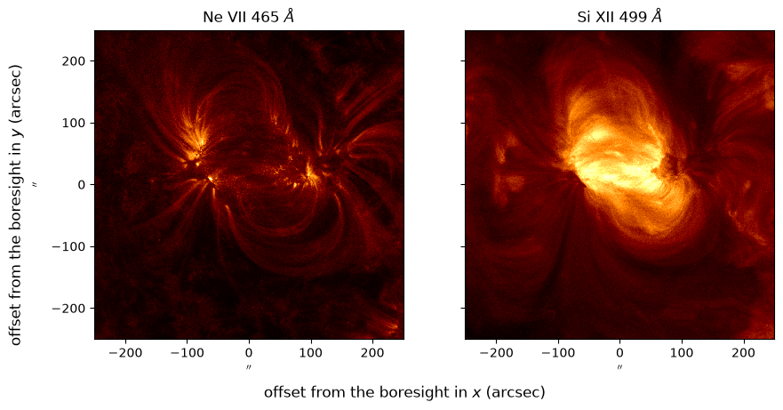
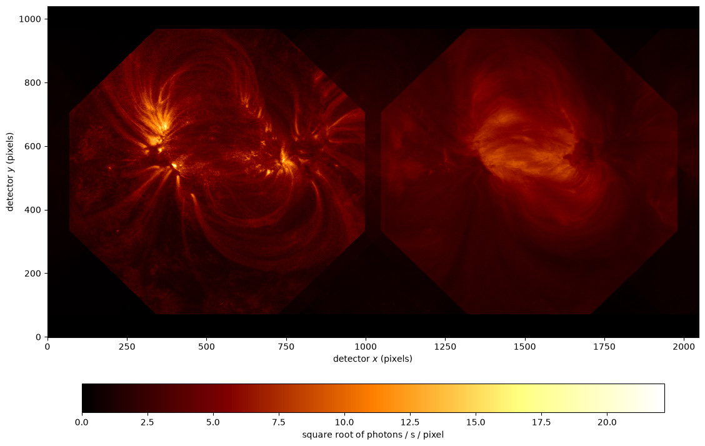

Synthetic ESIS-II Images#
This report forward-models a single ESIS-II detector frame from a real solar scene: the active-region pair NOAA 12565 and 12567 observed by SDO/AIA on 2016 July 15 at 00:00 UT.
The scene is esis.flights.f2.data.synth.scene_dem(). The differential emission measure (DEM) of each AIA pixel is inverted from the six optically thin EUV channels with utu.dem.plowman(), against the CHIANTI 11 temperature response of sdo.aia.temperature_response(), and the spectrum of the plasma it describes is computed from the CHIANTI atomic database with utu.spectrum, for every line in the ESIS-II passband which carries at least half a percent of its radiance. Each line is
spread over bins of velocity by the thermal motion of its ions, at rest.
[1]:
import matplotlib.pyplot as plt
import numpy as np
import astropy.units as u
import astropy.visualization
import named_arrays as na
import optika
import esis
The scene#
The axes of the AIA pixels are renamed, so that they can’t be mistaken for the axes of the ESIS-II detector the scene is imaged onto. The first call downloads the AIA images and computes the contribution functions of the lines, which takes about a quarter of an hour; both are cached afterwards.
[2]:
axis_x = "scene_x"
axis_y = "scene_y"
scene = esis.flights.f2.data.synth.scene_dem(
axis_detector_x=axis_x,
axis_detector_y=axis_y,
)
scene.outputs.shape
WARNING: VerifyWarning: Invalid 'BLANK' keyword in header. The 'BLANK' keyword is only applicable to integer data, and will be ignored in this HDU. [astropy.io.fits.hdu.image]
2026-10-15 17:38:30 - fiasco - WARNING: VerifyWarning: Invalid 'BLANK' keyword in header. The 'BLANK' keyword is only applicable to integer data, and will be ignored in this HDU.
WARNING: VerifyWarning: Invalid 'BLANK' keyword in header. The 'BLANK' keyword is only applicable to integer data, and will be ignored in this HDU. [astropy.io.fits.hdu.image]
2026-10-15 17:38:32 - fiasco - WARNING: VerifyWarning: Invalid 'BLANK' keyword in header. The 'BLANK' keyword is only applicable to integer data, and will be ignored in this HDU.
WARNING: VerifyWarning: Invalid 'BLANK' keyword in header. The 'BLANK' keyword is only applicable to integer data, and will be ignored in this HDU. [astropy.io.fits.hdu.image]
2026-10-15 17:38:34 - fiasco - WARNING: VerifyWarning: Invalid 'BLANK' keyword in header. The 'BLANK' keyword is only applicable to integer data, and will be ignored in this HDU.
WARNING: VerifyWarning: Invalid 'BLANK' keyword in header. The 'BLANK' keyword is only applicable to integer data, and will be ignored in this HDU. [astropy.io.fits.hdu.image]
2026-10-15 17:38:36 - fiasco - WARNING: VerifyWarning: Invalid 'BLANK' keyword in header. The 'BLANK' keyword is only applicable to integer data, and will be ignored in this HDU.
WARNING: VerifyWarning: Invalid 'BLANK' keyword in header. The 'BLANK' keyword is only applicable to integer data, and will be ignored in this HDU. [astropy.io.fits.hdu.image]
2026-10-15 17:38:38 - fiasco - WARNING: VerifyWarning: Invalid 'BLANK' keyword in header. The 'BLANK' keyword is only applicable to integer data, and will be ignored in this HDU.
WARNING: VerifyWarning: Invalid 'BLANK' keyword in header. The 'BLANK' keyword is only applicable to integer data, and will be ignored in this HDU. [astropy.io.fits.hdu.image]
2026-10-15 17:38:40 - fiasco - WARNING: VerifyWarning: Invalid 'BLANK' keyword in header. The 'BLANK' keyword is only applicable to integer data, and will be ignored in this HDU.
WARNING: VerifyWarning: Invalid 'BLANK' keyword in header. The 'BLANK' keyword is only applicable to integer data, and will be ignored in this HDU. [astropy.io.fits.hdu.image]
2026-10-15 17:38:42 - fiasco - WARNING: VerifyWarning: Invalid 'BLANK' keyword in header. The 'BLANK' keyword is only applicable to integer data, and will be ignored in this HDU.
WARNING: VerifyWarning: Invalid 'BLANK' keyword in header. The 'BLANK' keyword is only applicable to integer data, and will be ignored in this HDU. [astropy.io.fits.hdu.image]
2026-10-15 17:38:44 - fiasco - WARNING: VerifyWarning: Invalid 'BLANK' keyword in header. The 'BLANK' keyword is only applicable to integer data, and will be ignored in this HDU.
WARNING: VerifyWarning: Invalid 'BLANK' keyword in header. The 'BLANK' keyword is only applicable to integer data, and will be ignored in this HDU. [astropy.io.fits.hdu.image]
2026-10-15 17:38:46 - fiasco - WARNING: VerifyWarning: Invalid 'BLANK' keyword in header. The 'BLANK' keyword is only applicable to integer data, and will be ignored in this HDU.
WARNING: VerifyWarning: Invalid 'BLANK' keyword in header. The 'BLANK' keyword is only applicable to integer data, and will be ignored in this HDU. [astropy.io.fits.hdu.image]
2026-10-15 17:38:48 - fiasco - WARNING: VerifyWarning: Invalid 'BLANK' keyword in header. The 'BLANK' keyword is only applicable to integer data, and will be ignored in this HDU.
WARNING: VerifyWarning: Invalid 'BLANK' keyword in header. The 'BLANK' keyword is only applicable to integer data, and will be ignored in this HDU. [astropy.io.fits.hdu.image]
2026-10-15 17:38:50 - fiasco - WARNING: VerifyWarning: Invalid 'BLANK' keyword in header. The 'BLANK' keyword is only applicable to integer data, and will be ignored in this HDU.
WARNING: VerifyWarning: Invalid 'BLANK' keyword in header. The 'BLANK' keyword is only applicable to integer data, and will be ignored in this HDU. [astropy.io.fits.hdu.image]
2026-10-15 17:38:52 - fiasco - WARNING: VerifyWarning: Invalid 'BLANK' keyword in header. The 'BLANK' keyword is only applicable to integer data, and will be ignored in this HDU.
WARNING: FITSFixedWarning: 'datfix' made the change 'Set MJD-OBS to 57584.000001 from DATE-OBS'. [astropy.wcs.wcs]
2026-10-15 17:38:52 - fiasco - WARNING: FITSFixedWarning: 'datfix' made the change 'Set MJD-OBS to 57584.000001 from DATE-OBS'.
WARNING: FITSFixedWarning: 'datfix' made the change 'Set MJD-OBS to 57584.000088 from DATE-OBS'. [astropy.wcs.wcs]
2026-10-15 17:38:52 - fiasco - WARNING: FITSFixedWarning: 'datfix' made the change 'Set MJD-OBS to 57584.000088 from DATE-OBS'.
WARNING: FITSFixedWarning: 'datfix' made the change 'Set MJD-OBS to 57584.000120 from DATE-OBS'. [astropy.wcs.wcs]
2026-10-15 17:38:52 - fiasco - WARNING: FITSFixedWarning: 'datfix' made the change 'Set MJD-OBS to 57584.000120 from DATE-OBS'.
WARNING: FITSFixedWarning: 'datfix' made the change 'Set MJD-OBS to 57584.000068 from DATE-OBS'. [astropy.wcs.wcs]
2026-10-15 17:38:53 - fiasco - WARNING: FITSFixedWarning: 'datfix' made the change 'Set MJD-OBS to 57584.000068 from DATE-OBS'.
WARNING: FITSFixedWarning: 'datfix' made the change 'Set MJD-OBS to 57583.999984 from DATE-OBS'. [astropy.wcs.wcs]
2026-10-15 17:38:53 - fiasco - WARNING: FITSFixedWarning: 'datfix' made the change 'Set MJD-OBS to 57583.999984 from DATE-OBS'.
WARNING: FITSFixedWarning: 'datfix' made the change 'Set MJD-OBS to 57584.000019 from DATE-OBS'. [astropy.wcs.wcs]
2026-10-15 17:38:53 - fiasco - WARNING: FITSFixedWarning: 'datfix' made the change 'Set MJD-OBS to 57584.000019 from DATE-OBS'.
WARNING: FITSFixedWarning: 'datfix' made the change 'Set MJD-OBS to 57584.000140 from DATE-OBS'. [astropy.wcs.wcs]
2026-10-15 17:38:53 - fiasco - WARNING: FITSFixedWarning: 'datfix' made the change 'Set MJD-OBS to 57584.000140 from DATE-OBS'.
WARNING: FITSFixedWarning: 'datfix' made the change 'Set MJD-OBS to 57584.000227 from DATE-OBS'. [astropy.wcs.wcs]
2026-10-15 17:38:53 - fiasco - WARNING: FITSFixedWarning: 'datfix' made the change 'Set MJD-OBS to 57584.000227 from DATE-OBS'.
WARNING: FITSFixedWarning: 'datfix' made the change 'Set MJD-OBS to 57584.000259 from DATE-OBS'. [astropy.wcs.wcs]
2026-10-15 17:38:53 - fiasco - WARNING: FITSFixedWarning: 'datfix' made the change 'Set MJD-OBS to 57584.000259 from DATE-OBS'.
WARNING: FITSFixedWarning: 'datfix' made the change 'Set MJD-OBS to 57584.000206 from DATE-OBS'. [astropy.wcs.wcs]
2026-10-15 17:38:53 - fiasco - WARNING: FITSFixedWarning: 'datfix' made the change 'Set MJD-OBS to 57584.000206 from DATE-OBS'.
WARNING: FITSFixedWarning: 'datfix' made the change 'Set MJD-OBS to 57584.000123 from DATE-OBS'. [astropy.wcs.wcs]
2026-10-15 17:38:53 - fiasco - WARNING: FITSFixedWarning: 'datfix' made the change 'Set MJD-OBS to 57584.000123 from DATE-OBS'.
WARNING: FITSFixedWarning: 'datfix' made the change 'Set MJD-OBS to 57584.000158 from DATE-OBS'. [astropy.wcs.wcs]
2026-10-15 17:38:53 - fiasco - WARNING: FITSFixedWarning: 'datfix' made the change 'Set MJD-OBS to 57584.000158 from DATE-OBS'.
WARNING: No autoionization or level-resolved radiative recombination data available for He 1. Using single-ion model for level populations calculation. To silence this warning, set use_two_ion_model=False. [fiasco.ions]
2026-10-15 17:40:01 - fiasco - WARNING: No autoionization or level-resolved radiative recombination data available for He 1. Using single-ion model for level populations calculation. To silence this warning, set use_two_ion_model=False.
WARNING: No proton data available for He 1. Not including proton excitation and de-excitation in level populations calculation. [fiasco.ions]
2026-10-15 17:40:02 - fiasco - WARNING: No proton data available for He 1. Not including proton excitation and de-excitation in level populations calculation.
WARNING: No autoionization or level-resolved radiative recombination data available for C 2. Using single-ion model for level populations calculation. To silence this warning, set use_two_ion_model=False. [fiasco.ions]
2026-10-15 17:40:03 - fiasco - WARNING: No autoionization or level-resolved radiative recombination data available for C 2. Using single-ion model for level populations calculation. To silence this warning, set use_two_ion_model=False.
WARNING: No autoionization or level-resolved radiative recombination data available for C 3. Using single-ion model for level populations calculation. To silence this warning, set use_two_ion_model=False. [fiasco.ions]
2026-10-15 17:40:05 - fiasco - WARNING: No autoionization or level-resolved radiative recombination data available for C 3. Using single-ion model for level populations calculation. To silence this warning, set use_two_ion_model=False.
WARNING: No proton data available for C 4. Not including proton excitation and de-excitation in level populations calculation. [fiasco.ions]
2026-10-15 17:40:07 - fiasco - WARNING: No proton data available for C 4. Not including proton excitation and de-excitation in level populations calculation.
WARNING: No proton data available for C 5. Not including proton excitation and de-excitation in level populations calculation. [fiasco.ions]
2026-10-15 17:40:33 - fiasco - WARNING: No proton data available for C 5. Not including proton excitation and de-excitation in level populations calculation.
WARNING: No proton data available for C 5. Not including proton excitation and de-excitation in level populations calculation. [fiasco.ions]
2026-10-15 17:40:38 - fiasco - WARNING: No proton data available for C 5. Not including proton excitation and de-excitation in level populations calculation.
WARNING: No autoionization or level-resolved radiative recombination data available for C 6. Using single-ion model for level populations calculation. To silence this warning, set use_two_ion_model=False. [fiasco.ions]
2026-10-15 17:41:07 - fiasco - WARNING: No autoionization or level-resolved radiative recombination data available for C 6. Using single-ion model for level populations calculation. To silence this warning, set use_two_ion_model=False.
WARNING: No autoionization or level-resolved radiative recombination data available for N 2. Using single-ion model for level populations calculation. To silence this warning, set use_two_ion_model=False. [fiasco.ions]
2026-10-15 17:41:08 - fiasco - WARNING: No autoionization or level-resolved radiative recombination data available for N 2. Using single-ion model for level populations calculation. To silence this warning, set use_two_ion_model=False.
WARNING: No autoionization or level-resolved radiative recombination data available for N 3. Using single-ion model for level populations calculation. To silence this warning, set use_two_ion_model=False. [fiasco.ions]
2026-10-15 17:41:10 - fiasco - WARNING: No autoionization or level-resolved radiative recombination data available for N 3. Using single-ion model for level populations calculation. To silence this warning, set use_two_ion_model=False.
WARNING: No autoionization or level-resolved radiative recombination data available for N 4. Using single-ion model for level populations calculation. To silence this warning, set use_two_ion_model=False. [fiasco.ions]
2026-10-15 17:41:12 - fiasco - WARNING: No autoionization or level-resolved radiative recombination data available for N 4. Using single-ion model for level populations calculation. To silence this warning, set use_two_ion_model=False.
WARNING: No proton data available for N 5. Not including proton excitation and de-excitation in level populations calculation. [fiasco.ions]
2026-10-15 17:41:15 - fiasco - WARNING: No proton data available for N 5. Not including proton excitation and de-excitation in level populations calculation.
WARNING: No proton data available for N 6. Not including proton excitation and de-excitation in level populations calculation. [fiasco.ions]
2026-10-15 17:41:40 - fiasco - WARNING: No proton data available for N 6. Not including proton excitation and de-excitation in level populations calculation.
WARNING: No proton data available for N 6. Not including proton excitation and de-excitation in level populations calculation. [fiasco.ions]
2026-10-15 17:41:46 - fiasco - WARNING: No proton data available for N 6. Not including proton excitation and de-excitation in level populations calculation.
WARNING: No proton data available for N 7. Not including proton excitation and de-excitation in level populations calculation. [fiasco.ions]
2026-10-15 17:42:11 - fiasco - WARNING: No proton data available for N 7. Not including proton excitation and de-excitation in level populations calculation.
WARNING: No autoionization or level-resolved radiative recombination data available for O 2. Using single-ion model for level populations calculation. To silence this warning, set use_two_ion_model=False. [fiasco.ions]
2026-10-15 17:42:14 - fiasco - WARNING: No autoionization or level-resolved radiative recombination data available for O 2. Using single-ion model for level populations calculation. To silence this warning, set use_two_ion_model=False.
WARNING: No proton data available for O 2. Not including proton excitation and de-excitation in level populations calculation. [fiasco.ions]
2026-10-15 17:42:15 - fiasco - WARNING: No proton data available for O 2. Not including proton excitation and de-excitation in level populations calculation.
WARNING: No autoionization or level-resolved radiative recombination data available for O 3. Using single-ion model for level populations calculation. To silence this warning, set use_two_ion_model=False. [fiasco.ions]
2026-10-15 17:42:16 - fiasco - WARNING: No autoionization or level-resolved radiative recombination data available for O 3. Using single-ion model for level populations calculation. To silence this warning, set use_two_ion_model=False.
WARNING: No autoionization or level-resolved radiative recombination data available for O 4. Using single-ion model for level populations calculation. To silence this warning, set use_two_ion_model=False. [fiasco.ions]
2026-10-15 17:42:18 - fiasco - WARNING: No autoionization or level-resolved radiative recombination data available for O 4. Using single-ion model for level populations calculation. To silence this warning, set use_two_ion_model=False.
WARNING: No autoionization or level-resolved radiative recombination data available for O 5. Using single-ion model for level populations calculation. To silence this warning, set use_two_ion_model=False. [fiasco.ions]
2026-10-15 17:42:21 - fiasco - WARNING: No autoionization or level-resolved radiative recombination data available for O 5. Using single-ion model for level populations calculation. To silence this warning, set use_two_ion_model=False.
WARNING: No proton data available for O 6. Not including proton excitation and de-excitation in level populations calculation. [fiasco.ions]
2026-10-15 17:42:23 - fiasco - WARNING: No proton data available for O 6. Not including proton excitation and de-excitation in level populations calculation.
WARNING: No proton data available for O 7. Not including proton excitation and de-excitation in level populations calculation. [fiasco.ions]
2026-10-15 17:42:49 - fiasco - WARNING: No proton data available for O 7. Not including proton excitation and de-excitation in level populations calculation.
WARNING: No proton data available for O 7. Not including proton excitation and de-excitation in level populations calculation. [fiasco.ions]
2026-10-15 17:42:54 - fiasco - WARNING: No proton data available for O 7. Not including proton excitation and de-excitation in level populations calculation.
WARNING: No proton data available for O 8. Not including proton excitation and de-excitation in level populations calculation. [fiasco.ions]
2026-10-15 17:43:19 - fiasco - WARNING: No proton data available for O 8. Not including proton excitation and de-excitation in level populations calculation.
WARNING: No autoionization or level-resolved radiative recombination data available for Ne 2. Using single-ion model for level populations calculation. To silence this warning, set use_two_ion_model=False. [fiasco.ions]
2026-10-15 17:43:22 - fiasco - WARNING: No autoionization or level-resolved radiative recombination data available for Ne 2. Using single-ion model for level populations calculation. To silence this warning, set use_two_ion_model=False.
WARNING: No autoionization or level-resolved radiative recombination data available for Ne 3. Using single-ion model for level populations calculation. To silence this warning, set use_two_ion_model=False. [fiasco.ions]
2026-10-15 17:43:24 - fiasco - WARNING: No autoionization or level-resolved radiative recombination data available for Ne 3. Using single-ion model for level populations calculation. To silence this warning, set use_two_ion_model=False.
WARNING: No autoionization or level-resolved radiative recombination data available for Ne 4. Using single-ion model for level populations calculation. To silence this warning, set use_two_ion_model=False. [fiasco.ions]
2026-10-15 17:43:26 - fiasco - WARNING: No autoionization or level-resolved radiative recombination data available for Ne 4. Using single-ion model for level populations calculation. To silence this warning, set use_two_ion_model=False.
WARNING: No proton data available for Ne 4. Not including proton excitation and de-excitation in level populations calculation. [fiasco.ions]
2026-10-15 17:43:27 - fiasco - WARNING: No proton data available for Ne 4. Not including proton excitation and de-excitation in level populations calculation.
WARNING: No autoionization or level-resolved radiative recombination data available for Ne 5. Using single-ion model for level populations calculation. To silence this warning, set use_two_ion_model=False. [fiasco.ions]
2026-10-15 17:43:27 - fiasco - WARNING: No autoionization or level-resolved radiative recombination data available for Ne 5. Using single-ion model for level populations calculation. To silence this warning, set use_two_ion_model=False.
WARNING: No autoionization or level-resolved radiative recombination data available for Ne 6. Using single-ion model for level populations calculation. To silence this warning, set use_two_ion_model=False. [fiasco.ions]
2026-10-15 17:43:31 - fiasco - WARNING: No autoionization or level-resolved radiative recombination data available for Ne 6. Using single-ion model for level populations calculation. To silence this warning, set use_two_ion_model=False.
WARNING: No autoionization or level-resolved radiative recombination data available for Ne 7. Using single-ion model for level populations calculation. To silence this warning, set use_two_ion_model=False. [fiasco.ions]
2026-10-15 17:43:33 - fiasco - WARNING: No autoionization or level-resolved radiative recombination data available for Ne 7. Using single-ion model for level populations calculation. To silence this warning, set use_two_ion_model=False.
WARNING: No proton data available for Ne 8. Not including proton excitation and de-excitation in level populations calculation. [fiasco.ions]
2026-10-15 17:43:36 - fiasco - WARNING: No proton data available for Ne 8. Not including proton excitation and de-excitation in level populations calculation.
WARNING: No proton data available for Ne 9. Not including proton excitation and de-excitation in level populations calculation. [fiasco.ions]
2026-10-15 17:44:02 - fiasco - WARNING: No proton data available for Ne 9. Not including proton excitation and de-excitation in level populations calculation.
WARNING: No proton data available for Ne 9. Not including proton excitation and de-excitation in level populations calculation. [fiasco.ions]
2026-10-15 17:44:07 - fiasco - WARNING: No proton data available for Ne 9. Not including proton excitation and de-excitation in level populations calculation.
WARNING: No proton data available for Ne 10. Not including proton excitation and de-excitation in level populations calculation. [fiasco.ions]
2026-10-15 17:44:33 - fiasco - WARNING: No proton data available for Ne 10. Not including proton excitation and de-excitation in level populations calculation.
WARNING: No autoionization or level-resolved radiative recombination data available for Mg 3. Using single-ion model for level populations calculation. To silence this warning, set use_two_ion_model=False. [fiasco.ions]
2026-10-15 17:44:36 - fiasco - WARNING: No autoionization or level-resolved radiative recombination data available for Mg 3. Using single-ion model for level populations calculation. To silence this warning, set use_two_ion_model=False.
WARNING: No proton data available for Mg 3. Not including proton excitation and de-excitation in level populations calculation. [fiasco.ions]
2026-10-15 17:44:37 - fiasco - WARNING: No proton data available for Mg 3. Not including proton excitation and de-excitation in level populations calculation.
WARNING: No autoionization or level-resolved radiative recombination data available for Mg 4. Using single-ion model for level populations calculation. To silence this warning, set use_two_ion_model=False. [fiasco.ions]
2026-10-15 17:44:38 - fiasco - WARNING: No autoionization or level-resolved radiative recombination data available for Mg 4. Using single-ion model for level populations calculation. To silence this warning, set use_two_ion_model=False.
WARNING: No autoionization or level-resolved radiative recombination data available for Mg 5. Using single-ion model for level populations calculation. To silence this warning, set use_two_ion_model=False. [fiasco.ions]
2026-10-15 17:44:40 - fiasco - WARNING: No autoionization or level-resolved radiative recombination data available for Mg 5. Using single-ion model for level populations calculation. To silence this warning, set use_two_ion_model=False.
WARNING: No autoionization or level-resolved radiative recombination data available for Mg 6. Using single-ion model for level populations calculation. To silence this warning, set use_two_ion_model=False. [fiasco.ions]
2026-10-15 17:44:42 - fiasco - WARNING: No autoionization or level-resolved radiative recombination data available for Mg 6. Using single-ion model for level populations calculation. To silence this warning, set use_two_ion_model=False.
WARNING: No autoionization or level-resolved radiative recombination data available for Mg 7. Using single-ion model for level populations calculation. To silence this warning, set use_two_ion_model=False. [fiasco.ions]
2026-10-15 17:44:44 - fiasco - WARNING: No autoionization or level-resolved radiative recombination data available for Mg 7. Using single-ion model for level populations calculation. To silence this warning, set use_two_ion_model=False.
WARNING: No autoionization or level-resolved radiative recombination data available for Mg 8. Using single-ion model for level populations calculation. To silence this warning, set use_two_ion_model=False. [fiasco.ions]
2026-10-15 17:44:50 - fiasco - WARNING: No autoionization or level-resolved radiative recombination data available for Mg 8. Using single-ion model for level populations calculation. To silence this warning, set use_two_ion_model=False.
WARNING: No autoionization or level-resolved radiative recombination data available for Mg 9. Using single-ion model for level populations calculation. To silence this warning, set use_two_ion_model=False. [fiasco.ions]
2026-10-15 17:44:52 - fiasco - WARNING: No autoionization or level-resolved radiative recombination data available for Mg 9. Using single-ion model for level populations calculation. To silence this warning, set use_two_ion_model=False.
WARNING: No proton data available for Mg 10. Not including proton excitation and de-excitation in level populations calculation. [fiasco.ions]
2026-10-15 17:44:55 - fiasco - WARNING: No proton data available for Mg 10. Not including proton excitation and de-excitation in level populations calculation.
WARNING: No proton data available for Mg 11. Not including proton excitation and de-excitation in level populations calculation. [fiasco.ions]
2026-10-15 17:45:21 - fiasco - WARNING: No proton data available for Mg 11. Not including proton excitation and de-excitation in level populations calculation.
WARNING: No proton data available for Al 3. Not including proton excitation and de-excitation in level populations calculation. [fiasco.ions]
2026-10-15 17:45:27 - fiasco - WARNING: No proton data available for Al 3. Not including proton excitation and de-excitation in level populations calculation.
WARNING: No proton data available for Al 4. Not including proton excitation and de-excitation in level populations calculation. [fiasco.ions]
2026-10-15 17:45:53 - fiasco - WARNING: No proton data available for Al 4. Not including proton excitation and de-excitation in level populations calculation.
WARNING: No autoionization or level-resolved radiative recombination data available for Al 4. Using single-ion model for level populations calculation. To silence this warning, set use_two_ion_model=False. [fiasco.ions]
2026-10-15 17:45:56 - fiasco - WARNING: No autoionization or level-resolved radiative recombination data available for Al 4. Using single-ion model for level populations calculation. To silence this warning, set use_two_ion_model=False.
WARNING: No proton data available for Al 4. Not including proton excitation and de-excitation in level populations calculation. [fiasco.ions]
2026-10-15 17:45:57 - fiasco - WARNING: No proton data available for Al 4. Not including proton excitation and de-excitation in level populations calculation.
WARNING: No autoionization or level-resolved radiative recombination data available for Al 5. Using single-ion model for level populations calculation. To silence this warning, set use_two_ion_model=False. [fiasco.ions]
2026-10-15 17:45:58 - fiasco - WARNING: No autoionization or level-resolved radiative recombination data available for Al 5. Using single-ion model for level populations calculation. To silence this warning, set use_two_ion_model=False.
WARNING: No autoionization or level-resolved radiative recombination data available for Al 7. Using single-ion model for level populations calculation. To silence this warning, set use_two_ion_model=False. [fiasco.ions]
2026-10-15 17:46:00 - fiasco - WARNING: No autoionization or level-resolved radiative recombination data available for Al 7. Using single-ion model for level populations calculation. To silence this warning, set use_two_ion_model=False.
WARNING: No proton data available for Al 7. Not including proton excitation and de-excitation in level populations calculation. [fiasco.ions]
2026-10-15 17:46:01 - fiasco - WARNING: No proton data available for Al 7. Not including proton excitation and de-excitation in level populations calculation.
WARNING: No autoionization or level-resolved radiative recombination data available for Al 8. Using single-ion model for level populations calculation. To silence this warning, set use_two_ion_model=False. [fiasco.ions]
2026-10-15 17:46:02 - fiasco - WARNING: No autoionization or level-resolved radiative recombination data available for Al 8. Using single-ion model for level populations calculation. To silence this warning, set use_two_ion_model=False.
WARNING: No proton data available for Al 8. Not including proton excitation and de-excitation in level populations calculation. [fiasco.ions]
2026-10-15 17:46:08 - fiasco - WARNING: No proton data available for Al 8. Not including proton excitation and de-excitation in level populations calculation.
WARNING: No autoionization or level-resolved radiative recombination data available for Al 9. Using single-ion model for level populations calculation. To silence this warning, set use_two_ion_model=False. [fiasco.ions]
2026-10-15 17:46:08 - fiasco - WARNING: No autoionization or level-resolved radiative recombination data available for Al 9. Using single-ion model for level populations calculation. To silence this warning, set use_two_ion_model=False.
WARNING: No autoionization or level-resolved radiative recombination data available for Al 10. Using single-ion model for level populations calculation. To silence this warning, set use_two_ion_model=False. [fiasco.ions]
2026-10-15 17:46:11 - fiasco - WARNING: No autoionization or level-resolved radiative recombination data available for Al 10. Using single-ion model for level populations calculation. To silence this warning, set use_two_ion_model=False.
WARNING: No proton data available for Al 11. Not including proton excitation and de-excitation in level populations calculation. [fiasco.ions]
2026-10-15 17:46:14 - fiasco - WARNING: No proton data available for Al 11. Not including proton excitation and de-excitation in level populations calculation.
WARNING: No proton data available for Al 12. Not including proton excitation and de-excitation in level populations calculation. [fiasco.ions]
2026-10-15 17:46:39 - fiasco - WARNING: No proton data available for Al 12. Not including proton excitation and de-excitation in level populations calculation.
WARNING: No proton data available for Al 12. Not including proton excitation and de-excitation in level populations calculation. [fiasco.ions]
2026-10-15 17:46:45 - fiasco - WARNING: No proton data available for Al 12. Not including proton excitation and de-excitation in level populations calculation.
WARNING: No proton data available for Al 13. Not including proton excitation and de-excitation in level populations calculation. [fiasco.ions]
2026-10-15 17:47:10 - fiasco - WARNING: No proton data available for Al 13. Not including proton excitation and de-excitation in level populations calculation.
WARNING: No autoionization or level-resolved radiative recombination data available for Si 3. Using single-ion model for level populations calculation. To silence this warning, set use_two_ion_model=False. [fiasco.ions]
2026-10-15 17:47:13 - fiasco - WARNING: No autoionization or level-resolved radiative recombination data available for Si 3. Using single-ion model for level populations calculation. To silence this warning, set use_two_ion_model=False.
WARNING: No proton data available for Si 4. Not including proton excitation and de-excitation in level populations calculation. [fiasco.ions]
2026-10-15 17:47:16 - fiasco - WARNING: No proton data available for Si 4. Not including proton excitation and de-excitation in level populations calculation.
WARNING: No proton data available for Si 5. Not including proton excitation and de-excitation in level populations calculation. [fiasco.ions]
2026-10-15 17:47:42 - fiasco - WARNING: No proton data available for Si 5. Not including proton excitation and de-excitation in level populations calculation.
WARNING: No autoionization or level-resolved radiative recombination data available for Si 5. Using single-ion model for level populations calculation. To silence this warning, set use_two_ion_model=False. [fiasco.ions]
2026-10-15 17:47:45 - fiasco - WARNING: No autoionization or level-resolved radiative recombination data available for Si 5. Using single-ion model for level populations calculation. To silence this warning, set use_two_ion_model=False.
WARNING: No proton data available for Si 5. Not including proton excitation and de-excitation in level populations calculation. [fiasco.ions]
2026-10-15 17:47:47 - fiasco - WARNING: No proton data available for Si 5. Not including proton excitation and de-excitation in level populations calculation.
WARNING: No autoionization or level-resolved radiative recombination data available for Si 6. Using single-ion model for level populations calculation. To silence this warning, set use_two_ion_model=False. [fiasco.ions]
2026-10-15 17:47:47 - fiasco - WARNING: No autoionization or level-resolved radiative recombination data available for Si 6. Using single-ion model for level populations calculation. To silence this warning, set use_two_ion_model=False.
WARNING: No autoionization or level-resolved radiative recombination data available for Si 7. Using single-ion model for level populations calculation. To silence this warning, set use_two_ion_model=False. [fiasco.ions]
2026-10-15 17:47:49 - fiasco - WARNING: No autoionization or level-resolved radiative recombination data available for Si 7. Using single-ion model for level populations calculation. To silence this warning, set use_two_ion_model=False.
WARNING: No autoionization or level-resolved radiative recombination data available for Si 8. Using single-ion model for level populations calculation. To silence this warning, set use_two_ion_model=False. [fiasco.ions]
2026-10-15 17:47:55 - fiasco - WARNING: No autoionization or level-resolved radiative recombination data available for Si 8. Using single-ion model for level populations calculation. To silence this warning, set use_two_ion_model=False.
WARNING: No autoionization or level-resolved radiative recombination data available for Si 9. Using single-ion model for level populations calculation. To silence this warning, set use_two_ion_model=False. [fiasco.ions]
2026-10-15 17:48:05 - fiasco - WARNING: No autoionization or level-resolved radiative recombination data available for Si 9. Using single-ion model for level populations calculation. To silence this warning, set use_two_ion_model=False.
WARNING: No autoionization or level-resolved radiative recombination data available for Si 10. Using single-ion model for level populations calculation. To silence this warning, set use_two_ion_model=False. [fiasco.ions]
2026-10-15 17:48:15 - fiasco - WARNING: No autoionization or level-resolved radiative recombination data available for Si 10. Using single-ion model for level populations calculation. To silence this warning, set use_two_ion_model=False.
WARNING: No autoionization or level-resolved radiative recombination data available for Si 11. Using single-ion model for level populations calculation. To silence this warning, set use_two_ion_model=False. [fiasco.ions]
2026-10-15 17:48:17 - fiasco - WARNING: No autoionization or level-resolved radiative recombination data available for Si 11. Using single-ion model for level populations calculation. To silence this warning, set use_two_ion_model=False.
WARNING: No proton data available for Si 12. Not including proton excitation and de-excitation in level populations calculation. [fiasco.ions]
2026-10-15 17:48:20 - fiasco - WARNING: No proton data available for Si 12. Not including proton excitation and de-excitation in level populations calculation.
WARNING: No proton data available for Si 13. Not including proton excitation and de-excitation in level populations calculation. [fiasco.ions]
2026-10-15 17:48:45 - fiasco - WARNING: No proton data available for Si 13. Not including proton excitation and de-excitation in level populations calculation.
WARNING: No proton data available for Si 13. Not including proton excitation and de-excitation in level populations calculation. [fiasco.ions]
2026-10-15 17:48:51 - fiasco - WARNING: No proton data available for Si 13. Not including proton excitation and de-excitation in level populations calculation.
WARNING: No proton data available for Si 14. Not including proton excitation and de-excitation in level populations calculation. [fiasco.ions]
2026-10-15 17:49:16 - fiasco - WARNING: No proton data available for Si 14. Not including proton excitation and de-excitation in level populations calculation.
WARNING: No autoionization or level-resolved radiative recombination data available for S 3. Using single-ion model for level populations calculation. To silence this warning, set use_two_ion_model=False. [fiasco.ions]
2026-10-15 17:49:20 - fiasco - WARNING: No autoionization or level-resolved radiative recombination data available for S 3. Using single-ion model for level populations calculation. To silence this warning, set use_two_ion_model=False.
WARNING: No proton data available for S 3. Not including proton excitation and de-excitation in level populations calculation. [fiasco.ions]
2026-10-15 17:49:20 - fiasco - WARNING: No proton data available for S 3. Not including proton excitation and de-excitation in level populations calculation.
WARNING: No autoionization or level-resolved radiative recombination data available for S 4. Using single-ion model for level populations calculation. To silence this warning, set use_two_ion_model=False. [fiasco.ions]
2026-10-15 17:49:21 - fiasco - WARNING: No autoionization or level-resolved radiative recombination data available for S 4. Using single-ion model for level populations calculation. To silence this warning, set use_two_ion_model=False.
WARNING: No autoionization or level-resolved radiative recombination data available for S 5. Using single-ion model for level populations calculation. To silence this warning, set use_two_ion_model=False. [fiasco.ions]
2026-10-15 17:49:22 - fiasco - WARNING: No autoionization or level-resolved radiative recombination data available for S 5. Using single-ion model for level populations calculation. To silence this warning, set use_two_ion_model=False.
WARNING: No proton data available for S 6. Not including proton excitation and de-excitation in level populations calculation. [fiasco.ions]
2026-10-15 17:49:26 - fiasco - WARNING: No proton data available for S 6. Not including proton excitation and de-excitation in level populations calculation.
WARNING: No proton data available for S 7. Not including proton excitation and de-excitation in level populations calculation. [fiasco.ions]
2026-10-15 17:49:52 - fiasco - WARNING: No proton data available for S 7. Not including proton excitation and de-excitation in level populations calculation.
WARNING: No autoionization or level-resolved radiative recombination data available for S 7. Using single-ion model for level populations calculation. To silence this warning, set use_two_ion_model=False. [fiasco.ions]
2026-10-15 17:49:55 - fiasco - WARNING: No autoionization or level-resolved radiative recombination data available for S 7. Using single-ion model for level populations calculation. To silence this warning, set use_two_ion_model=False.
WARNING: No proton data available for S 7. Not including proton excitation and de-excitation in level populations calculation. [fiasco.ions]
2026-10-15 17:49:56 - fiasco - WARNING: No proton data available for S 7. Not including proton excitation and de-excitation in level populations calculation.
WARNING: No autoionization or level-resolved radiative recombination data available for S 8. Using single-ion model for level populations calculation. To silence this warning, set use_two_ion_model=False. [fiasco.ions]
2026-10-15 17:49:57 - fiasco - WARNING: No autoionization or level-resolved radiative recombination data available for S 8. Using single-ion model for level populations calculation. To silence this warning, set use_two_ion_model=False.
WARNING: No autoionization or level-resolved radiative recombination data available for S 9. Using single-ion model for level populations calculation. To silence this warning, set use_two_ion_model=False. [fiasco.ions]
2026-10-15 17:49:59 - fiasco - WARNING: No autoionization or level-resolved radiative recombination data available for S 9. Using single-ion model for level populations calculation. To silence this warning, set use_two_ion_model=False.
WARNING: No autoionization or level-resolved radiative recombination data available for S 10. Using single-ion model for level populations calculation. To silence this warning, set use_two_ion_model=False. [fiasco.ions]
2026-10-15 17:50:07 - fiasco - WARNING: No autoionization or level-resolved radiative recombination data available for S 10. Using single-ion model for level populations calculation. To silence this warning, set use_two_ion_model=False.
WARNING: No autoionization or level-resolved radiative recombination data available for S 11. Using single-ion model for level populations calculation. To silence this warning, set use_two_ion_model=False. [fiasco.ions]
2026-10-15 17:50:08 - fiasco - WARNING: No autoionization or level-resolved radiative recombination data available for S 11. Using single-ion model for level populations calculation. To silence this warning, set use_two_ion_model=False.
WARNING: No autoionization or level-resolved radiative recombination data available for S 12. Using single-ion model for level populations calculation. To silence this warning, set use_two_ion_model=False. [fiasco.ions]
2026-10-15 17:50:18 - fiasco - WARNING: No autoionization or level-resolved radiative recombination data available for S 12. Using single-ion model for level populations calculation. To silence this warning, set use_two_ion_model=False.
WARNING: No autoionization or level-resolved radiative recombination data available for S 13. Using single-ion model for level populations calculation. To silence this warning, set use_two_ion_model=False. [fiasco.ions]
2026-10-15 17:50:21 - fiasco - WARNING: No autoionization or level-resolved radiative recombination data available for S 13. Using single-ion model for level populations calculation. To silence this warning, set use_two_ion_model=False.
WARNING: No proton data available for S 14. Not including proton excitation and de-excitation in level populations calculation. [fiasco.ions]
2026-10-15 17:50:24 - fiasco - WARNING: No proton data available for S 14. Not including proton excitation and de-excitation in level populations calculation.
WARNING: No proton data available for S 15. Not including proton excitation and de-excitation in level populations calculation. [fiasco.ions]
2026-10-15 17:50:49 - fiasco - WARNING: No proton data available for S 15. Not including proton excitation and de-excitation in level populations calculation.
WARNING: No proton data available for S 15. Not including proton excitation and de-excitation in level populations calculation. [fiasco.ions]
2026-10-15 17:50:55 - fiasco - WARNING: No proton data available for S 15. Not including proton excitation and de-excitation in level populations calculation.
WARNING: No proton data available for S 16. Not including proton excitation and de-excitation in level populations calculation. [fiasco.ions]
2026-10-15 17:51:20 - fiasco - WARNING: No proton data available for S 16. Not including proton excitation and de-excitation in level populations calculation.
WARNING: No autoionization or level-resolved radiative recombination data available for Fe 3. Using single-ion model for level populations calculation. To silence this warning, set use_two_ion_model=False. [fiasco.ions]
2026-10-15 17:51:23 - fiasco - WARNING: No autoionization or level-resolved radiative recombination data available for Fe 3. Using single-ion model for level populations calculation. To silence this warning, set use_two_ion_model=False.
WARNING: No proton data available for Fe 3. Not including proton excitation and de-excitation in level populations calculation. [fiasco.ions]
2026-10-15 17:51:26 - fiasco - WARNING: No proton data available for Fe 3. Not including proton excitation and de-excitation in level populations calculation.
WARNING: No autoionization or level-resolved radiative recombination data available for Fe 6. Using single-ion model for level populations calculation. To silence this warning, set use_two_ion_model=False. [fiasco.ions]
2026-10-15 17:51:27 - fiasco - WARNING: No autoionization or level-resolved radiative recombination data available for Fe 6. Using single-ion model for level populations calculation. To silence this warning, set use_two_ion_model=False.
WARNING: No proton data available for Fe 6. Not including proton excitation and de-excitation in level populations calculation. [fiasco.ions]
2026-10-15 17:51:27 - fiasco - WARNING: No proton data available for Fe 6. Not including proton excitation and de-excitation in level populations calculation.
WARNING: No autoionization or level-resolved radiative recombination data available for Fe 7. Using single-ion model for level populations calculation. To silence this warning, set use_two_ion_model=False. [fiasco.ions]
2026-10-15 17:51:28 - fiasco - WARNING: No autoionization or level-resolved radiative recombination data available for Fe 7. Using single-ion model for level populations calculation. To silence this warning, set use_two_ion_model=False.
WARNING: No proton data available for Fe 7. Not including proton excitation and de-excitation in level populations calculation. [fiasco.ions]
2026-10-15 17:51:30 - fiasco - WARNING: No proton data available for Fe 7. Not including proton excitation and de-excitation in level populations calculation.
WARNING: No autoionization or level-resolved radiative recombination data available for Fe 8. Using single-ion model for level populations calculation. To silence this warning, set use_two_ion_model=False. [fiasco.ions]
2026-10-15 17:51:30 - fiasco - WARNING: No autoionization or level-resolved radiative recombination data available for Fe 8. Using single-ion model for level populations calculation. To silence this warning, set use_two_ion_model=False.
WARNING: No proton data available for Fe 8. Not including proton excitation and de-excitation in level populations calculation. [fiasco.ions]
2026-10-15 17:51:37 - fiasco - WARNING: No proton data available for Fe 8. Not including proton excitation and de-excitation in level populations calculation.
WARNING: No autoionization or level-resolved radiative recombination data available for Fe 9. Using single-ion model for level populations calculation. To silence this warning, set use_two_ion_model=False. [fiasco.ions]
2026-10-15 17:51:38 - fiasco - WARNING: No autoionization or level-resolved radiative recombination data available for Fe 9. Using single-ion model for level populations calculation. To silence this warning, set use_two_ion_model=False.
WARNING: No proton data available for Fe 9. Not including proton excitation and de-excitation in level populations calculation. [fiasco.ions]
2026-10-15 17:51:51 - fiasco - WARNING: No proton data available for Fe 9. Not including proton excitation and de-excitation in level populations calculation.
WARNING: No autoionization or level-resolved radiative recombination data available for Fe 10. Using single-ion model for level populations calculation. To silence this warning, set use_two_ion_model=False. [fiasco.ions]
2026-10-15 17:51:52 - fiasco - WARNING: No autoionization or level-resolved radiative recombination data available for Fe 10. Using single-ion model for level populations calculation. To silence this warning, set use_two_ion_model=False.
WARNING: No autoionization or level-resolved radiative recombination data available for Fe 11. Using single-ion model for level populations calculation. To silence this warning, set use_two_ion_model=False. [fiasco.ions]
2026-10-15 17:51:55 - fiasco - WARNING: No autoionization or level-resolved radiative recombination data available for Fe 11. Using single-ion model for level populations calculation. To silence this warning, set use_two_ion_model=False.
WARNING: No autoionization or level-resolved radiative recombination data available for Fe 12. Using single-ion model for level populations calculation. To silence this warning, set use_two_ion_model=False. [fiasco.ions]
2026-10-15 17:51:59 - fiasco - WARNING: No autoionization or level-resolved radiative recombination data available for Fe 12. Using single-ion model for level populations calculation. To silence this warning, set use_two_ion_model=False.
WARNING: No autoionization or level-resolved radiative recombination data available for Fe 13. Using single-ion model for level populations calculation. To silence this warning, set use_two_ion_model=False. [fiasco.ions]
2026-10-15 17:52:02 - fiasco - WARNING: No autoionization or level-resolved radiative recombination data available for Fe 13. Using single-ion model for level populations calculation. To silence this warning, set use_two_ion_model=False.
WARNING: No autoionization or level-resolved radiative recombination data available for Fe 14. Using single-ion model for level populations calculation. To silence this warning, set use_two_ion_model=False. [fiasco.ions]
2026-10-15 17:52:05 - fiasco - WARNING: No autoionization or level-resolved radiative recombination data available for Fe 14. Using single-ion model for level populations calculation. To silence this warning, set use_two_ion_model=False.
WARNING: No autoionization or level-resolved radiative recombination data available for Fe 15. Using single-ion model for level populations calculation. To silence this warning, set use_two_ion_model=False. [fiasco.ions]
2026-10-15 17:52:07 - fiasco - WARNING: No autoionization or level-resolved radiative recombination data available for Fe 15. Using single-ion model for level populations calculation. To silence this warning, set use_two_ion_model=False.
WARNING: No proton data available for Fe 16. Not including proton excitation and de-excitation in level populations calculation. [fiasco.ions]
2026-10-15 17:52:12 - fiasco - WARNING: No proton data available for Fe 16. Not including proton excitation and de-excitation in level populations calculation.
WARNING: No proton data available for Fe 17. Not including proton excitation and de-excitation in level populations calculation. [fiasco.ions]
2026-10-15 17:52:38 - fiasco - WARNING: No proton data available for Fe 17. Not including proton excitation and de-excitation in level populations calculation.
WARNING: No autoionization or level-resolved radiative recombination data available for Fe 17. Using single-ion model for level populations calculation. To silence this warning, set use_two_ion_model=False. [fiasco.ions]
2026-10-15 17:52:41 - fiasco - WARNING: No autoionization or level-resolved radiative recombination data available for Fe 17. Using single-ion model for level populations calculation. To silence this warning, set use_two_ion_model=False.
WARNING: No proton data available for Fe 17. Not including proton excitation and de-excitation in level populations calculation. [fiasco.ions]
2026-10-15 17:52:42 - fiasco - WARNING: No proton data available for Fe 17. Not including proton excitation and de-excitation in level populations calculation.
WARNING: No proton data available for Fe 24. Not including proton excitation and de-excitation in level populations calculation. [fiasco.ions]
2026-10-15 17:55:57 - fiasco - WARNING: No proton data available for Fe 24. Not including proton excitation and de-excitation in level populations calculation.
WARNING: No proton data available for Fe 24. Not including proton excitation and de-excitation in level populations calculation. [fiasco.ions]
2026-10-15 17:56:02 - fiasco - WARNING: No proton data available for Fe 24. Not including proton excitation and de-excitation in level populations calculation.
WARNING: No proton data available for Fe 25. Not including proton excitation and de-excitation in level populations calculation. [fiasco.ions]
2026-10-15 17:56:27 - fiasco - WARNING: No proton data available for Fe 25. Not including proton excitation and de-excitation in level populations calculation.
[2]:
{'line': 22, 'scene_y': 833, 'scene_x': 834, 'velocity': 20}
The radiance of each line is its spectral radiance summed over its bins of velocity. The two lines ESIS-II was designed for are the brightest, followed by the weaker line of the Si XII doublet and the Mg VII and Mg VIII lines at the short end of the passband.
[3]:
width = np.diff(scene.inputs.wavelength, axis="velocity")
radiance = (scene.outputs * width).sum("velocity")
rest = scene.inputs.wavelength_rest
mean = radiance.mean((axis_x, axis_y))
fraction = mean / mean.sum("line")
print(f"{'wavelength':>12}{'radiance':>12}{'fraction':>10}")
for i in np.argsort(-mean.ndarray.value):
index = dict(line=i)
print(
f"{rest[index].ndarray.to_value(u.AA):12.3f}"
f"{mean[index].ndarray.value:12.1f}"
f"{fraction[index].ndarray.value:10.3f}"
)
wavelength radiance fraction
499.406 291.5 0.271
465.221 234.5 0.218
520.665 141.1 0.131
436.733 86.1 0.080
434.927 52.7 0.049
430.454 52.4 0.049
431.323 30.9 0.029
435.646 22.6 0.021
447.357 20.7 0.019
443.973 17.5 0.016
467.427 15.6 0.014
445.700 14.2 0.013
433.179 14.2 0.013
510.042 13.5 0.013
482.994 11.5 0.011
481.489 9.2 0.009
431.198 8.7 0.008
436.660 8.4 0.008
487.042 8.3 0.008
444.219 8.0 0.007
434.730 7.8 0.007
439.176 6.1 0.006
[4]:
lines = {
r"Ne VII 465 $\AA$": esis.flights.f2.wavelength_Ne_VII,
r"Si XII 499 $\AA$": esis.flights.f2.wavelength_Si_XII,
}
with astropy.visualization.quantity_support():
fig, axs = plt.subplots(
ncols=2,
figsize=(9, 4.5),
sharey=True,
constrained_layout=True,
)
for ax, (name, w) in zip(axs, lines.items()):
index = np.argmin(np.abs(rest - w), axis="line")
na.plt.pcolormesh(
scene.inputs.position,
C=np.sqrt(radiance[index].value),
ax=ax,
cmap="afmhot",
)
ax.set_title(name)
ax.set_aspect("equal")
fig.supxlabel("offset from the boresight in $x$ (arcsec)")
fig.supylabel("offset from the boresight in $y$ (arcsec)")

The instrument#
The forward model is a single channel of the current ESIS-II design. Replacing the sensor material with an ideal one, which counts one electron per absorbed photon, and exposing for one second makes the frame read directly in photons per second per pixel.
[5]:
instrument = esis.flights.f2.optics.design_single(num_distribution=0)
system = instrument.system
system.sensor.material = optika.sensors.materials.IdealSensorMaterial()
system.sensor.timedelta_exposure = 1 * u.s
Projection onto the detector#
Each line is imaged through a linear approximation of the optical system, optika.systems.SequentialSystem.linearize(), which fits the distortion, vignetting, effective area, and field stop of the system and then images the scene by conservative regridding, without the sampling noise of a ray trace. The fits are polynomials in wavelength, so each line is linearized on five wavelengths spanning two angstroms around it.
[6]:
frame = 0
for i in range(rest.shape["line"]):
index = dict(line=i)
w = rest[index]
linear = system.linearize(
wavelength=na.linspace(w - 1 * u.AA, w + 1 * u.AA, axis="_wavelength", num=5),
degree=2,
)
image = linear.image(
scene=scene[index],
axis_wavelength="velocity",
axis_field=(axis_x, axis_y),
noise=False,
)
frame = frame + image.outputs.to(u.electron)
WARNING: function 'sqrt' is not known to astropy's Quantity. Will run it anyway, hoping it will treat ndarray subclasses correctly. Please raise an issue at https://github.com/astropy/astropy/issues. [astropy.units.quantity]
2026-10-15 17:57:21 - fiasco - WARNING: function 'sqrt' is not known to astropy's Quantity. Will run it anyway, hoping it will treat ndarray subclasses correctly. Please raise an issue at https://github.com/astropy/astropy/issues.
WARNING: function 'sqrt' is not known to astropy's Quantity. Will run it anyway, hoping it will treat ndarray subclasses correctly. Please raise an issue at https://github.com/astropy/astropy/issues. [astropy.units.quantity]
2026-10-15 17:57:35 - fiasco - WARNING: function 'sqrt' is not known to astropy's Quantity. Will run it anyway, hoping it will treat ndarray subclasses correctly. Please raise an issue at https://github.com/astropy/astropy/issues.
The synthetic frame#
The Ne VII and Si XII images of the octagonal field stop land side by side on the detector, on either side of its center. Ne VII shows the cool fan loops and moss of the two active regions, and Si XII their hot cores. The fainter octagons to the left are the Mg VII and Mg VIII lines, and the one to the right is the weaker line of the Si XII doublet.
[7]:
rate = frame.value.ndarray_aligned(("detector_y", "detector_x"))
fig, ax = plt.subplots(figsize=(12, 7), constrained_layout=True)
img = ax.imshow(
np.sqrt(np.clip(rate, 0, None)),
origin="lower",
cmap="afmhot",
interpolation="none",
)
ax.set_xlabel("detector $x$ (pixels)")
ax.set_ylabel("detector $y$ (pixels)")
colorbar = fig.colorbar(img, ax=ax, orientation="horizontal", shrink=0.8)
colorbar.set_label("square root of photons / s / pixel")
